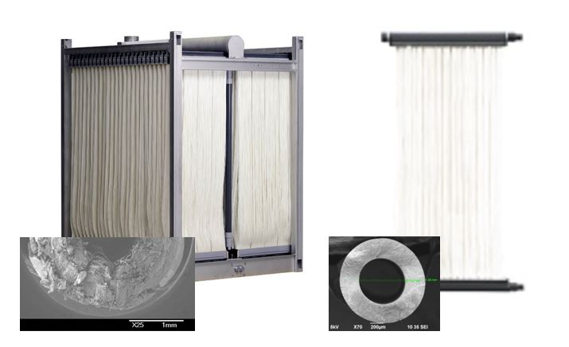
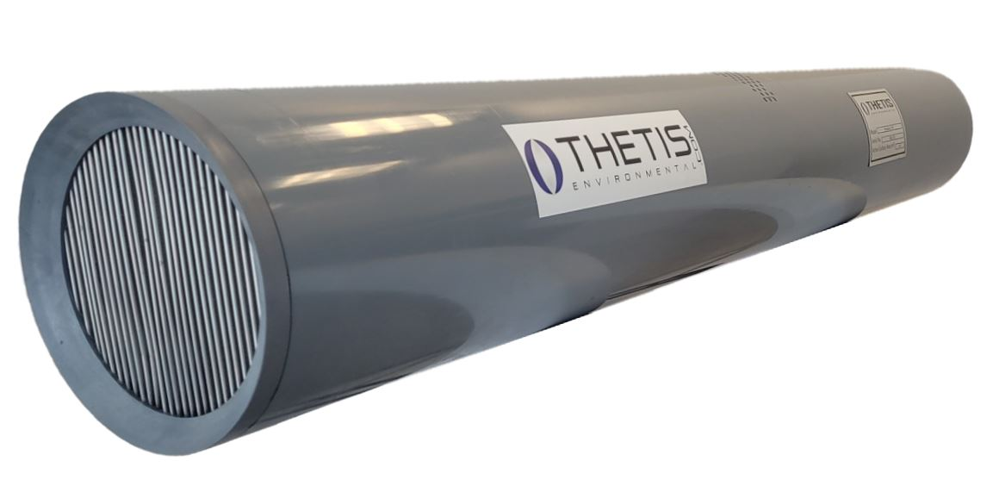
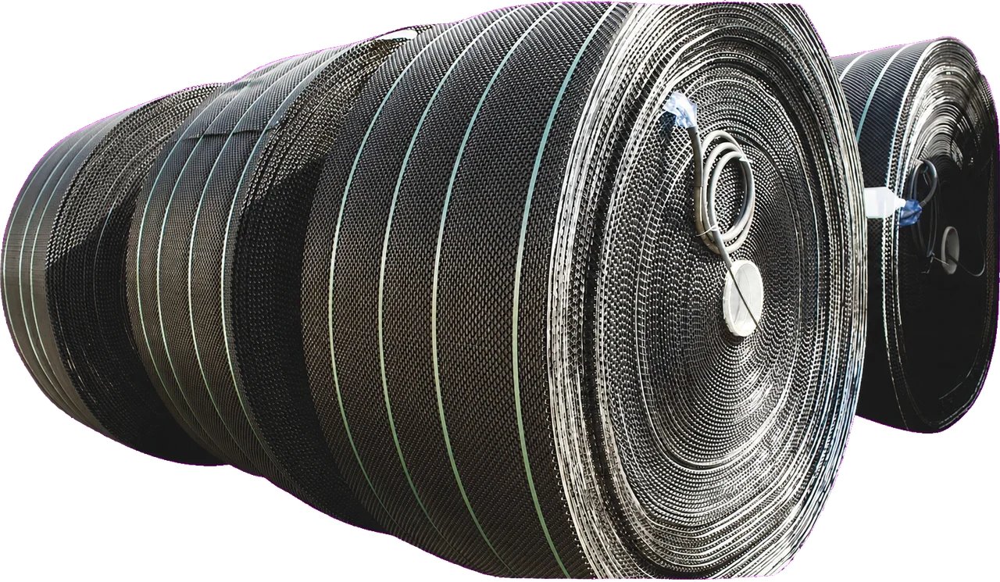

MSD 高壓泵
多段離心泵，為海水反滲透提供所需進料壓力。
查看設備 ↗承信環境科技股份有限公司致力於提供全面的水處理環境工程解決方案，並代理水處理專業設備，為環境永續發展貢獻心力。我們秉持創新技術、誠信服務的理念，期許成為您最值得信賴的合作夥伴。

針對市政與工業污水處理中的MBR運作參數與膜污染控制策略進行整合研究，必須搭配不同膜絲的產品及操作、維保。

使用獨創設備進行過濾，可免除前處理直接過濾後達到RO超濾膜UF的效果。

採用中空纖維膜進行無泡曝氣，使硝化與反硝化同步進行，可大幅降低曝氣能耗，並提升氮、BOD及COD去除效率，適合分散式污水處理及既有污水廠升級改造。
決定膜材料對水中有機污染物的吸附程度，進而影響膜的通量。親水性好的膜材料不易吸附有機污染物，能夠保持較高的膜通量，提高過濾效率。
孔徑是其最核心的特徵之一，直接決定了膜的分離性能和應用領域。通常指膜表面或膜孔道中的物理孔洞或通道的開孔大小。超濾膜孔徑通常以尺寸（微米）或截留分子量（道爾頓）來表征。
全部進料液在壓力作用下透過超濾膜，形成透過液，無連續濃縮液排放。適用於原水水質較好、污染物含量低的情況，操作簡單、能耗較低。
一部分進料液在壓力作用下透過超濾膜，一部分進料液沿膜表面流動並攜帶被截留的雜質流出膜組件，有效減少膜污染，提高過濾效率。
利用高速水流在切向於膜表面方向沖刷掉膜表面鬆散的、未能完全形成的污染物層或懸浮物，防止其壓實和累計。
與過濾運行方向相反的方向施加水流，利用水流的反向壓力，將附著在膜表面的污染物剝離、沖走。
將化學藥劑添加到反洗水中，化學品的溶解、分解作用有利於去除單純的物理反洗難以有效清除的有機污染物、微生物和膠體等物質。是介於純物理反洗和完整化學清洗之間的維護性化學清洗。
當超濾系統的跨膜壓差(ΔP)顯著升高或產水量明顯下降，且通過常規的正沖洗、反沖洗、加藥反洗無法有效恢復性能時所進行的深入、徹底的恢復性化學清洗。通常在離線或系統隔離清洗（即不參與生產）的狀態下進行，使用較高濃度的化學藥劑在膜系統內循環。
產品源自初代可回收平板玻璃，由西班牙研發團隊設計，專為水處理與過濾應用打造，可選擇不同粒徑達到不同的過濾效果。
Fluence（富朗世）的 MABR 技術是一項經廣泛驗證的市政污水處理專利技術，採用螺旋纏繞式自供氧生物膜。半透膜浸沒於污水池中，低壓空氣由膜的氣相側送入，使膜表面形成好氧生物膜，並在缺氧液體中同步進行反硝化反應。相較於傳統高壓曝氣，可大幅降低曝氣能耗並提高氧氣傳質效率，帶來更高效的污染物去除能力、更低的營運成本及更小的占地需求。
海水反滲透排出的高壓濃鹽水仍帶有可用的壓力能。FEDCO HPB 以濃鹽水驅動渦輪，把回收的能量用於 RO 進水或段間增壓。依系統配置，可降低高壓泵須提供的壓升。
HP-HEMI 在 HPB 的基礎上加入馬達輔助，以調節進水與濃鹽水流量。實際選型需依流量、壓力及膜段配置評估。